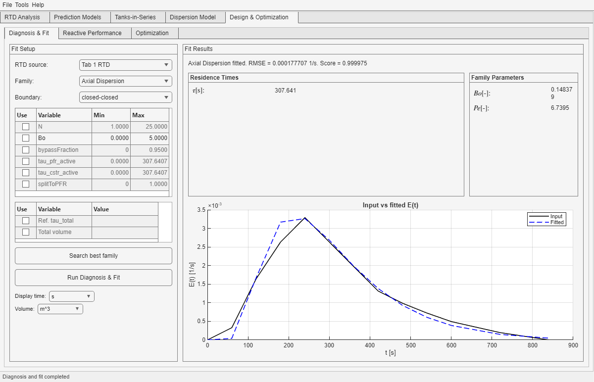

This tab groups three design-oriented tools in one workspace: Diagnosis & Fit, Reactive Performance, and Optimization. It is built on top of an RTD that should already exist, not as a replacement for RTD Analysis.
How the Workspace Is Structured

Representative design-workspace view with the Diagnosis & Fit subtab populated. The same workspace later feeds the reactive and optimization subtabs.
Keep the RTD fixed and optimize inlet concentrations against a reactive objective.
Key Dependency to Remember
Diagnosis & Fit depends strongly on the RTD created in Tab 1.
Reactive Performance and Optimization share chemistry-oriented state inside the workspace.
The current Optimization route changes inlet concentrations, not hydrodynamic parameters.
What must already exist
Why it matters in Tab 5
A meaningful RTD
It is the whole basis of Diagnosis & Fit and the fixed hydrodynamic context of the other subtabs.
A consistent ReactionSys
Required for Reactive Performance and Optimization metrics.
A consistent Stream
Required to build inlet concentrations and to inherit Optimization input units.
Important mental model: Tab 5 does not create a new independent world. It organizes design decisions on top of objects and assumptions that should already be credible upstream.
Recommended Order Inside Tab 5
Start with Diagnosis & Fit only if you want an equivalent RTD family.
Move to Reactive Performance to check how the selected RTD behaves against the four reference models.
Use Optimization only after the objective, chemistry, and RTD source already make engineering sense.
Good practice: treat Tab 5 as a decision workspace built on top of previous tabs, not as a replacement for building RTDs or chemistry from scratch.
What This Tab Is Best For
Comparing the real RTD against equivalent hydrodynamic families.
Keeping chemistry, RTD source, and design reasoning in one place.
Running process-side screening studies without touching the original RTD definition.
Use Tab 5 when...
You want one design workspace instead of jumping across several tabs.
You need to compare original and fitted RTD interpretations under the same chemistry.
You want optimization to happen on process inputs rather than on hydrodynamic parameters.
Do not use Tab 5 as a substitute for...
Building the RTD from scratch.
Fixing a questionable chemistry definition.
Skipping the first direct full-RTD reading in Prediction Models.
Common Mistakes Across the Workspace
Trusting a fitted family before checking whether the underlying RTD is already well understood in Tab 1.
Moving to Optimization before checking in Reactive Performance whether the chosen RTD source produces sensible trends.
Interpreting the best numerical score or the best scalar objective as automatically the best engineering story.